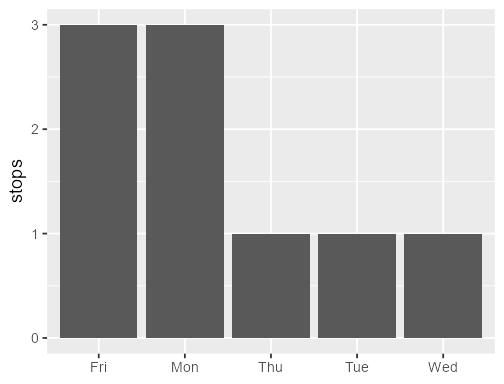
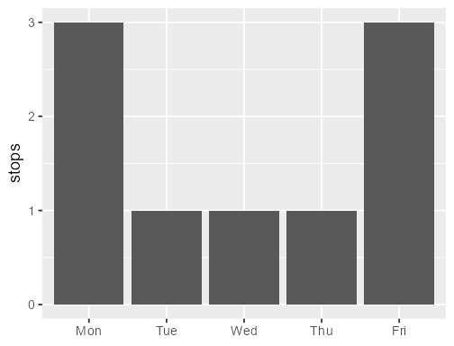
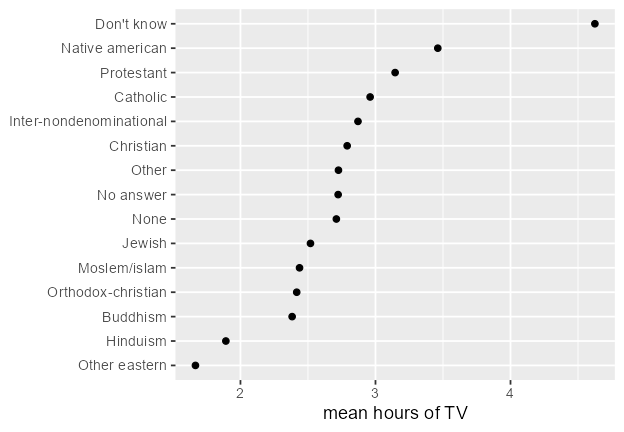
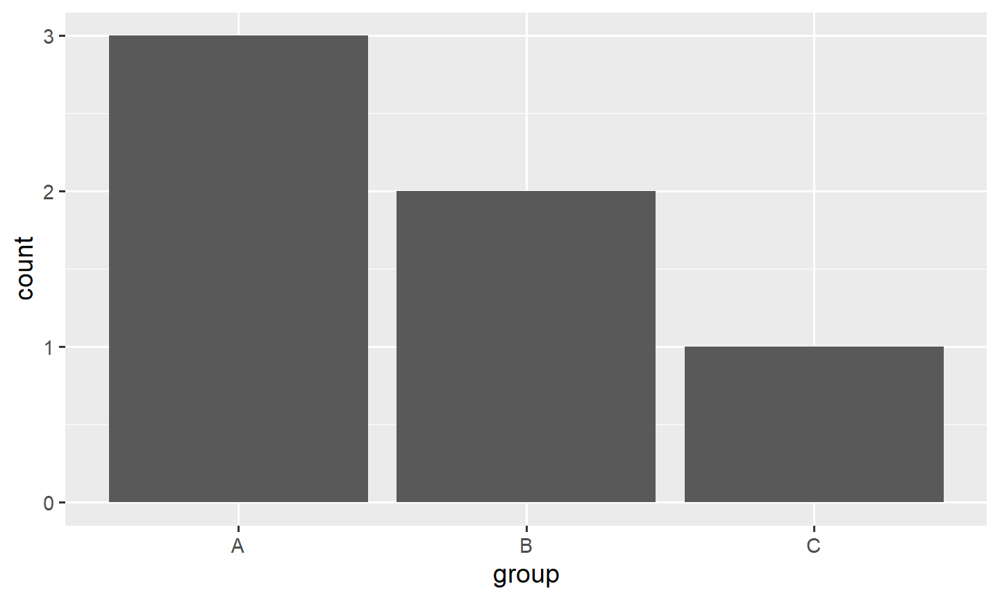
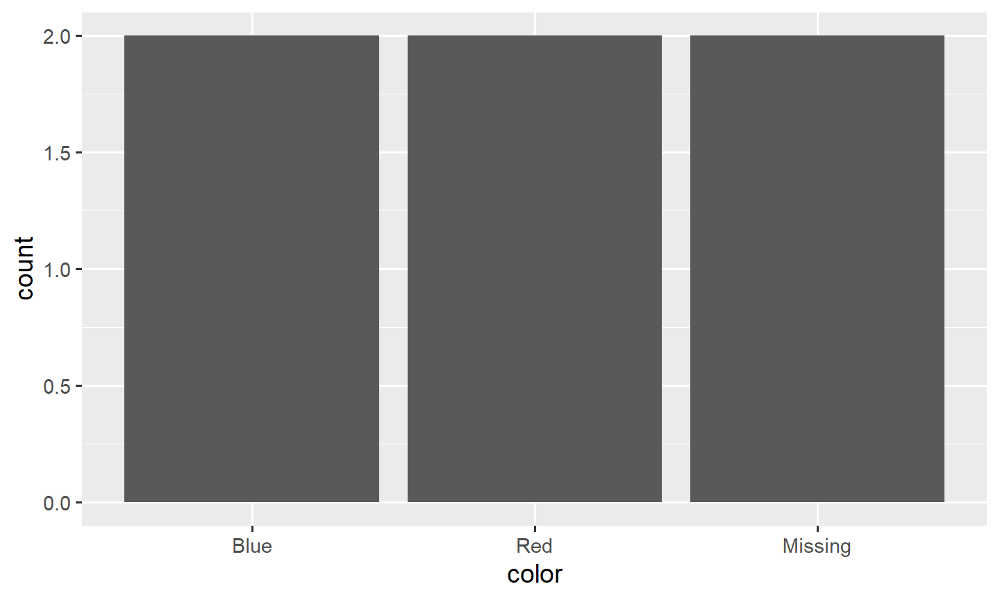
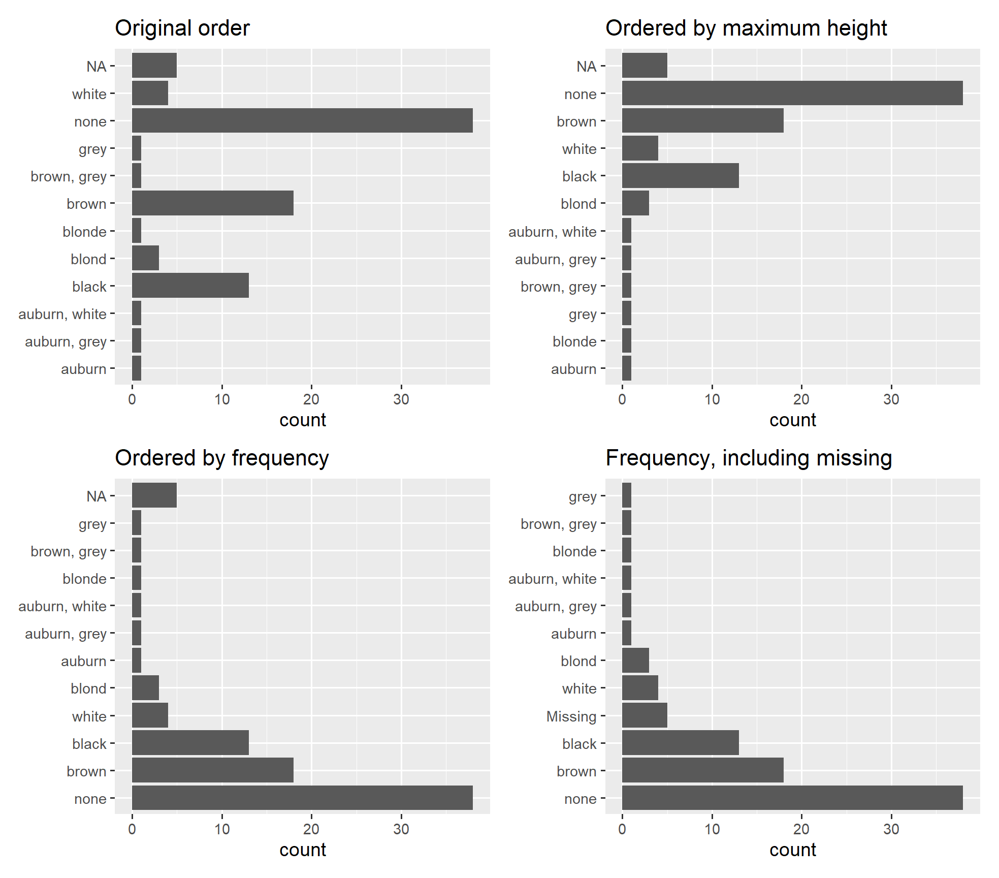

10.1 forcats: Factors
Values are the category on each row. Levels are the allowed categories, in the order tables and plots follow.
1. Values and levels
A factor has two parts.
- Values. The category on each row.
- Levels. The categories that are allowed, in an order.
Tables, legends, and axes follow the levels. They do not follow the order of the rows. forcats comes with library(tidyverse). Every helper starts with fct_.
library(tidyverse)
fc <- factor(c("B", "A", "B"), levels = c("A", "B", "C"))
fc
## [1] B A B
## Levels: A B C
C is a level. No row has that value.
What prints is the label. Under the label, each value is an integer: 1 for the first level, 2 for the second, and so on. That is why as.numeric() on a factor of numbers returns the index, not the number you see.
xf <- factor(c(10, 11, 13, 10))
xf
as.numeric(xf)
parse_number(as.character(xf))
## [1] 10 11 13 10
## Levels: 10 11 13
## [1] 1 2 3 1
## [1] 10 11 13 10
as.character() gets the labels back. parse_number() turns those labels into numbers. levels(xf)[xf] is the same recovery without converting to character first: a factor used as an index returns its labels.
factor() sorts the levels. as_factor() keeps the order the values first appear, which is what you want when the data is already in the right order.
factor(c("Wed", "Mon", "Fri", "Mon"))
as_factor(c("Wed", "Mon", "Fri", "Mon"))
## [1] Wed Mon Fri Mon
## Levels: Fri Mon Wed
## [1] Wed Mon Fri Mon
## Levels: Wed Mon Fri
Set levels yourself when the order is a real order, such as months or weekdays. A value that is not in levels becomes NA.
weekdays <- c("Mon", "Tue", "Wed", "Thu", "Fri")
factor(c("Mon", "Sun"), levels = weekdays)
## [1] Mon <NA>
## Levels: Mon Tue Wed Thu Fri
read_csv() does not make factors. A column stays character until you call factor(), as_factor(), or col_factor() inside read_csv().
A useful longer read: McNamara and Horton, Wrangling Categorical Data in R.
2. The axis follows the levels
Nine bus stops, stored as text. factor() with no levels argument sorts them alphabetically, so Friday comes before Monday.
weekdays <- c("Mon", "Tue", "Wed", "Thu", "Fri")
stops <- tibble(
day = c("Wed", "Mon", "Fri", "Mon", "Tue", "Fri", "Fri", "Thu", "Mon")
)
stops |>
mutate(day = factor(day)) |>
count(day)
## # A tibble: 5 × 2
## day n
## <fct> <int>
## 1 Fri 3
## 2 Mon 3
## 3 Thu 1
## 4 Tue 1
## 5 Wed 1

Pass the order you want. The counts do not change. The rows do not change. The axis does.
stops |>
mutate(day = factor(day, levels = weekdays)) |>
count(day)
## # A tibble: 5 × 2
## day n
## <fct> <int>
## 1 Mon 3
## 2 Tue 1
## 3 Wed 1
## 4 Thu 1
## 5 Fri 3

On a vertical axis, ggplot draws the first level at the bottom. After coord_flip(), the first level is at the bottom of a horizontal bar chart. fct_rev() flips the current levels when you want the opposite end there.
3. Level order is not frequency
gss_cat is a General Social Survey slice that ships with forcats. ?gss_cat. The factors you will use are marital, rincome, partyid, and relig. count() follows the level order, so the first row is the first level, not the largest group.
count(gss_cat, partyid)
## # A tibble: 10 × 2
## partyid n
## <fct> <int>
## 1 No answer 154
## 2 Don't know 1
## 3 Other party 393
## 4 Strong republican 2314
## 5 Not str republican 3032
## 6 Ind,near rep 1791
## 7 Independent 4119
## 8 Ind,near dem 2499
## 9 Not str democrat 3690
## 10 Strong democrat 3490
Independent is the largest group and the seventh row, because that is where its level sits.
4. Which function
| You want | Use |
|---|---|
| a fixed order you type (weekdays, months) | factor(x, levels = ) or fct_relevel() |
| levels ordered by a summary of another variable | fct_reorder() |
| most common level first | fct_infreq() |
| the current order flipped | fct_rev() |
| order of first appearance | as_factor() or fct_inorder() |
| new names, one level at a time | fct_recode() |
| several levels of one factor merged into one name | fct_collapse() |
| several factor vectors stacked into one factor | fct_c() |
| rare levels folded into Other | fct_lump_n() or fct_lump_prop() |
| unused levels removed | fct_drop() |
| a new level before any row has it | fct_expand() |
| missing values turned into a level | fct_na_value_to_level() |
fct_c() stacks vectors. fct_collapse() merges levels. Those are different jobs.
5. fct_reorder()
fct_reorder() changes the level order. It does not sort the rows. arrange() is what reorders rows.
fct_reorder(.f, .x, .fun = median, ..., .desc = FALSE)
.f is the categorical variable. .x is the numeric variable. .fun summarizes .x inside each level, and that one number decides where the level goes. The default summary is the median. .desc = TRUE reverses the order. Extra arguments in ... are passed on to .fun.
.fun has to return a single number for each level. A vector has no single place in the order, and fct_reorder() errors if it gets one.
Missing numbers in .x are dropped, with a warning, unless you set .na_rm. .na_rm = TRUE drops them quietly. .na_rm = FALSE keeps them.
A summary that is already a function
Mean salary puts Math first, then Physics, then CS.
df <- tibble(
department = c("Math", "Math", "CS", "CS", "Physics", "Physics"),
salary = c(80, 100, 120, 140, 90, 110)
)
df |>
mutate(department = fct_reorder(department, salary, .fun = mean)) |>
pull(department) |>
levels()
## [1] "Math" "Physics" "CS"
| Department | Mean salary |
|---|---|
| Math | 90 |
| Physics | 100 |
| CS | 130 |
A summary you write
The same helper takes a function you define. This one summarizes each group by the mean of .
myfun <- function(x) {
mean(x^2 + cos(x))
}
df2 <- tibble(
group = c("A", "A", "B", "B", "C", "C"),
x = c(1, 2, 3, 4, 0, 1)
)
df2 |>
mutate(group = fct_reorder(group, x, .fun = myfun)) |>
pull(group) |>
levels()
## [1] "C" "A" "B"
The function is applied to the rows in each group, separately. The order is C, then A, then B.
Replace the body with max() and the groups are ranked by their largest transformed value instead of their average. On these six numbers the order does not move: it is still C, A, B.
myfun <- function(x) {
max(x^2 + cos(x))
}
df2 |>
mutate(group = fct_reorder(group, x, .fun = myfun)) |>
pull(group) |>
levels()
## [1] "C" "A" "B"
A smaller set where the choice matters. Group A is 0 and 4: the mean of is about 8.17, and the max is about 15.3. Group B is 3 and 3.1: the mean is about 8.31, and the max is about 8.61.
df3 <- tibble(
group = c("A", "A", "B", "B"),
x = c(0, 4, 3, 3.1)
)
df3 |>
group_by(group) |>
summarize(
mean_fx = mean(x^2 + cos(x)),
max_fx = max(x^2 + cos(x)),
.groups = "drop"
)
## # A tibble: 2 × 3
## group mean_fx max_fx
## <chr> <dbl> <dbl>
## 1 A 8.17 15.3
## 2 B 8.31 8.61
df3 |>
mutate(group = fct_reorder(group, x, .fun = function(x) mean(x^2 + cos(x)))) |>
pull(group) |>
levels()
## [1] "A" "B"
df3 |>
mutate(group = fct_reorder(group, x, .fun = function(x) max(x^2 + cos(x)))) |>
pull(group) |>
levels()
## [1] "B" "A"
The mean order is A, B. The max order is B, A.
The same idea on gss_cat
Here the mean is computed first, one row per religion, and fct_reorder() sorts those rows. arrange(relig) prints them in the new level order. The plot uses the same order: least TV at the bottom, because that level is first.
tv <- gss_cat |>
filter(!is.na(tvhours)) |>
group_by(relig) |>
summarize(hours = mean(tvhours), .groups = "drop") |>
mutate(relig = fct_reorder(relig, hours)) |>
arrange(relig)
tv
## # A tibble: 15 × 2
## relig hours
## <fct> <dbl>
## 1 Other eastern 1.67
## 2 Hinduism 1.89
## 3 Buddhism 2.38
## 4 Orthodox-christian 2.42
## 5 Moslem/islam 2.44
## 6 Jewish 2.52
## 7 None 2.71
## 8 No answer 2.72
## 9 Other 2.73
## 10 Christian 2.79
## 11 Inter-nondenominational 2.87
## 12 Catholic 2.96
## 13 Protestant 3.15
## 14 Native american 3.46
## 15 Don't know 4.62

You do not have to summarize first. fct_reorder() will take the mean inside each religion. .na_rm = TRUE drops missing tvhours without a warning. The order matches the table. Not applicable is last: every tvhours in that group is missing, so there is no mean, and that level is sent to the end.
gss_cat |>
mutate(relig = fct_reorder(relig, tvhours, .fun = mean, .na_rm = TRUE)) |>
pull(relig) |>
levels()
## [1] "Other eastern" "Hinduism"
## [3] "Buddhism" "Orthodox-christian"
## [5] "Moslem/islam" "Jewish"
## [7] "None" "No answer"
## [9] "Other" "Christian"
## [11] "Inter-nondenominational" "Catholic"
## [13] "Protestant" "Native american"
## [15] "Don't know" "Not applicable"
6. fct_infreq()
fct_infreq() orders levels by how often they occur. The most common level is first.
fc <- factor(c("A", "B", "A", "C", "A", "B"))
fct_infreq(fc)
## [1] A B A C A B
## Levels: A B C
| Level | Rows |
|---|---|
| A | 3 |
| B | 2 |
| C | 1 |
So the levels are A, B, C. On a vertical bar chart the first level is the left bar, and that bar is the tallest.
tibble(group = c("A", "B", "A", "C", "A", "B")) |>
mutate(group = fct_infreq(group)) |>
ggplot(aes(x = group)) +
geom_bar()

Mutate the column, then map it. Writing aes(x = fct_infreq(group)) works, and the axis title becomes the expression.
Pipe fct_infreq() into fct_rev() when the longest bar should sit on the right of a vertical bar chart, or at the top of a horizontal one. marital below runs from rarest to most common.
gss_cat |>
mutate(marital = marital |> fct_infreq() |> fct_rev()) |>
count(marital)
## # A tibble: 6 × 2
## marital n
## <fct> <int>
## 1 No answer 17
## 2 Separated 743
## 3 Widowed 1807
## 4 Divorced 3383
## 5 Never married 5416
## 6 Married 10117
fct_relevel() moves named levels to the front and leaves the rest in their old order. A function in that spot is applied to the level names, so sort is alphabetical order.
gss_cat |>
mutate(partyid = fct_relevel(partyid, "Independent")) |>
count(partyid)
levels(fct_relevel(gss_cat$partyid, sort))
## # A tibble: 10 × 2
## partyid n
## <fct> <int>
## 1 Independent 4119
## 2 No answer 154
## 3 Don't know 1
## 4 Other party 393
## 5 Strong republican 2314
## 6 Not str republican 3032
## 7 Ind,near rep 1791
## 8 Ind,near dem 2499
## 9 Not str democrat 3690
## 10 Strong democrat 3490
## [1] "Don't know" "Ind,near dem" "Ind,near rep"
## [4] "Independent" "No answer" "Not str democrat"
## [7] "Not str republican" "Other party" "Strong democrat"
## [10] "Strong republican"
7. fct_c() stacks vectors
fct_c() binds factor vectors into one factor and keeps every level. The vectors do not need to share levels. It does not invent a new category. It stacks the rows you already have.
fc1 <- factor(c("A", "B"), levels = c("A", "B"))
fc2 <- factor(c("C", "D"), levels = c("C", "D"))
fct_c(fc1, fc2)
str(fct_c(fc1, fc2))
## [1] A B C D
## Levels: A B C D
## Factor w/ 4 levels "A","B","C","D": 1 2 3 4
Since R 4.1.0, base c() does the same thing with factors:
c(fc1, fc2)
## [1] A B C D
## Levels: A B C D
8. fct_collapse() merges levels
fct_collapse() replaces several levels of one factor with one new level. The new name is on the left. The old names are on the right.
fc <- factor(c("A", "B", "C", "A", "B", "C"))
fct_collapse(fc, AB = c("A", "B"))
## [1] AB AB C AB AB C
## Levels: AB C
A and B are gone. The rows that had those values are now AB.
The same pattern groups departments into fields. Wrap a character column in factor() first.
tibble(department = c("Math", "Physics", "Chemistry", "History", "English")) |>
mutate(
field = fct_collapse(
factor(department),
STEM = c("Math", "Physics", "Chemistry"),
Humanities = c("History", "English")
)
)
## # A tibble: 5 × 2
## department field
## <chr> <fct>
## 1 Math STEM
## 2 Physics STEM
## 3 Chemistry STEM
## 4 History Humanities
## 5 English Humanities
On gss_cat, several party answers share one name:
gss_cat |>
mutate(partyid = fct_collapse(
partyid,
other = c("No answer", "Don't know", "Other party"),
rep = c("Strong republican", "Not str republican"),
ind = c("Ind,near rep", "Independent", "Ind,near dem"),
dem = c("Not str democrat", "Strong democrat")
)) |>
count(partyid)
## # A tibble: 4 × 2
## partyid n
## <fct> <int>
## 1 other 548
## 2 rep 5346
## 3 ind 8409
## 4 dem 7180
Levels you do not name stay as they are.
fct_recode() is the one-name version of the same idea. The new name is on the left, the old name on the right, the same direction as mutate(). A name that matches nothing is left unchanged. NULL = "old" drops that level and turns its rows into NA.
gss_cat |>
mutate(partyid = fct_recode(
partyid,
"Rep, strong" = "Strong republican",
"Rep, weak" = "Not str republican",
"Dem, weak" = "Not str democrat",
"Dem, strong" = "Strong democrat"
)) |>
count(partyid)
## # A tibble: 10 × 2
## partyid n
## <fct> <int>
## 1 No answer 154
## 2 Don't know 1
## 3 Other party 393
## 4 Rep, strong 2314
## 5 Rep, weak 3032
## 6 Ind,near rep 1791
## 7 Independent 4119
## 8 Ind,near dem 2499
## 9 Dem, weak 3690
## 10 Dem, strong 3490
Keep these apart.
fct_c()stacks factor vectors.fct_collapse()merges levels of one factor.fct_recode()renames levels one at a time.
9. fct_drop() and fct_expand()
fct_drop() removes levels that no row uses.
fc <- factor(c("A", "B", "A"), levels = c("A", "B", "C", "D"))
fc
fct_drop(fc)
## [1] A B A
## Levels: A B C D
## [1] A B A
## Levels: A B
C and D were allowed. Neither appears. After fct_drop(), the levels are A and B. The rows are unchanged.
filter() removes rows. It does not remove levels. This is the usual reason to call fct_drop().
grades <- tibble(
grade = factor(
c("A", "B", "C", "A", "B"),
levels = c("A", "B", "C", "D")
)
)
kept <- grades |> filter(grade != "C")
levels(kept$grade)
kept |>
mutate(grade = fct_drop(grade)) |>
pull(grade)
## [1] "A" "B" "C" "D"
## [1] A B A B
## Levels: A B
After the filter, the values are A and B, and the levels are still A, B, C, and D. fct_drop() leaves A and B.
The same thing on gss_cat. Keeping only Independents leaves all ten party levels in the attribute.
party <- gss_cat |> filter(partyid == "Independent")
levels(party$partyid)
party |>
mutate(partyid = fct_drop(partyid)) |>
count(partyid)
## [1] "No answer" "Don't know" "Other party"
## [4] "Strong republican" "Not str republican" "Ind,near rep"
## [7] "Independent" "Ind,near dem" "Not str democrat"
## [10] "Strong democrat"
## # A tibble: 1 × 2
## partyid n
## <fct> <int>
## 1 Independent 4119
fct_expand() adds levels before any row has them. Lab questions that say "add a level" mean this, not a new observation.
fc <- factor(c("A", "B"))
fct_expand(fc, "C", "D")
status <- factor(c("Pending", "Approved", "Pending"))
status2 <- fct_expand(status, "Rejected", "Under Review")
levels(status2)
## [1] A B
## Levels: A B C D
## [1] "Approved" "Pending" "Rejected" "Under Review"
Approved and Pending were already there, in alphabetical order, because that is what factor() does. Rejected and Under Review are added at the end. No row is assigned to them.
fct_drop() removes empty levels. fct_expand() adds empty levels.
10. fct_na_value_to_level()
NA in a factor is not a level. count() skips it. A ggplot2 bar chart still draws those rows, and it parks the bar after the last level. fct_infreq() and fct_reorder() do not move that bar, because they only reorder levels.
fct_na_value_to_level() turns the missing values into a real level. fct_explicit_na() is the old name, and it is deprecated. Use fct_na_value_to_level().
fc <- factor(c("Red", "Blue", NA, "Red", NA))
fc
fc2 <- fct_na_value_to_level(fc, level = "Missing")
fc2
## [1] Red Blue <NA> Red <NA>
## Levels: Blue Red
## [1] Red Blue Missing Red Missing
## Levels: Blue Red Missing
"Missing" is a level. It is not a missing value. levels() lists it, and count() will count it.
tibble(color = factor(c("Red", "Blue", NA, "Red", NA, "Blue"))) |>
mutate(color = fct_na_value_to_level(color, "Missing")) |>
ggplot(aes(x = color)) +
geom_bar()

To omit the parked NA bar instead of naming it, add scale_x_discrete(na.translate = FALSE).
11. Four orders, one plot
patchwork puts ggplot objects on one page. It is not part of the tidyverse. Install it once with install.packages("patchwork").
starwars ships with dplyr. hair_color is character, so a plain bar chart sorts the colors alphabetically. Five characters have no hair color. Those rows are drawn as NA at the end of the axis until they become a level.
library(patchwork)
p1 <- starwars |>
ggplot(aes(x = hair_color)) +
geom_bar() +
coord_flip() +
labs(title = "Original order", x = NULL)
p2 <- starwars |>
ggplot(aes(x = fct_reorder(hair_color, height, .fun = max, .na_rm = TRUE))) +
geom_bar() +
coord_flip() +
labs(title = "Ordered by maximum height", x = NULL)
p3 <- starwars |>
ggplot(aes(x = fct_infreq(hair_color))) +
geom_bar() +
coord_flip() +
labs(title = "Ordered by frequency", x = NULL)
p4 <- starwars |>
mutate(
hair_color = fct_na_value_to_level(factor(hair_color), level = "Missing")
) |>
ggplot(aes(x = fct_infreq(hair_color))) +
geom_bar() +
coord_flip() +
labs(title = "Frequency, including missing", x = NULL)
(p1 + p2) / (p3 + p4)

(p1 + p2) / (p3 + p4) puts the first two plots on top and the last two underneath.
| Plot | Function | What sets the order? |
|---|---|---|
| 1 | none | Alphabetical order of the character values. NA is drawn, and it is not a level, so it sits at the end. |
| 2 | fct_reorder() |
The maximum height inside each hair color. .na_rm = TRUE drops missing heights before the max. The NA bar stays at the end. |
| 3 | fct_infreq() |
How many rows use each hair color. The NA bar stays at the end. |
| 4 | fct_na_value_to_level() then fct_infreq() |
Frequency, with the missing rows as a level named Missing, so that bar is placed with the others. |
The bar lengths are still counts. In plot 2, maximum height chooses the order of the colors. It does not choose the length of the bars.
fct_na_value_to_level() needs a factor. hair_color is character, so plot 4 wraps it in factor() first. .na_rm belongs to fct_reorder(). Writing na.rm = TRUE in that call does not set it. That name is passed through ... to max().
12. Rare levels
A religion plot with fifteen labels is hard to read. fct_lump_n(f, n) keeps the n most common levels and folds the rest into Other. Other is an extra level, so n = 5 produces six rows.
gss_cat |>
mutate(relig = fct_lump_n(relig, n = 5)) |>
count(relig, sort = TRUE)
## # A tibble: 6 × 2
## relig n
## <fct> <int>
## 1 Protestant 10846
## 2 Catholic 5124
## 3 None 3523
## 4 Other 913
## 5 Christian 689
## 6 Jewish 388
fct_lump_prop(f, prop) keeps levels that are at least that share of the rows. Ten percent leaves three religions, plus Other.
gss_cat |>
mutate(relig = fct_lump_prop(relig, prop = 0.1)) |>
count(relig, sort = TRUE)
## # A tibble: 4 × 2
## relig n
## <fct> <int>
## 1 Protestant 10846
## 2 Catholic 5124
## 3 None 3523
## 4 Other 1990
fct_lump(f, n = 5) is the older spelling of fct_lump_n().
13. Ordered factors
An ordered factor says the levels are ranked: low < medium < high, or January < February. factor(x, levels, ordered = TRUE) builds one. month(date, label = TRUE) and wday(date, label = TRUE) in lubridate return ordered factors, which is why a month axis comes out in calendar order.
Party and religion are not ranks. Leave them unordered. Order those with fct_relevel() or fct_reorder() when the plot needs an order. An ordered factor also changes the contrasts in a model, so use it only when the ranking is real.
14. Questions
- What is the difference between
fct_c()andfct_collapse()? - Does
fct_reorder()rearrange the rows, or only the levels? - Why must
.funreturn one number per level? - What is the difference between
fct_drop()andfct_expand()? - A factor has 5 levels and rows from only 3 of them. What is left after
fct_drop()? - How does
fct_infreq()pick the order? - What is the difference between a missing value,
NA, and a level named"Missing"?
Answers
fct_c()stacks factor vectors and keeps every level.fct_collapse()merges several levels of one factor into one new level.- Only the levels. The rows stay where they are. A table or an axis that follows the levels will look reordered.
arrange()is what moves rows. - Each level needs one position in the order. A vector does not have one position.
fct_reorder()checks and stops. fct_drop()removes levels that no row uses.fct_expand()adds levels that no row uses yet.- The two unused levels are removed. Three levels remain. The values in the rows do not change.
- By how many rows use each level. The most common level is first.
NAis not a level, so it is not part of that order. NAis a missing value. It is not a level, socount()skips it, and a bar chart parks it after the real levels."Missing"is a level. It is counted, andfct_infreq()can place it.
15. Practice
Use gss_cat unless the question says otherwise.
- Rebuild the weekday factor from section 2 so the levels run Friday back to Monday.
- Reorder
partyidalphabetically. - Move the
rincomelevel"Not applicable"to the front. - Abbreviate
maritalwithfct_recode(): Never, Sep, Div, Wid, Mar. - Keep the four most common
religlevels. How many rows doescount()return, and why? - Keep the rows with
marital == "Married". Look atlevels()before and afterfct_drop().
Solutions
stops |>
mutate(day = factor(day, levels = weekdays) |> fct_rev()) |>
count(day)
levels(fct_relevel(gss_cat$partyid, sort))
levels(fct_relevel(gss_cat$rincome, "Not applicable"))
gss_cat |>
mutate(marital = fct_recode(
marital,
Never = "Never married",
Div = "Divorced",
Wid = "Widowed",
Sep = "Separated",
Mar = "Married"
)) |>
count(marital)
gss_cat |>
mutate(relig = fct_lump_n(relig, n = 4)) |>
count(relig, sort = TRUE)
married <- gss_cat |> filter(marital == "Married")
levels(married$marital)
levels(fct_drop(married$marital))
## # A tibble: 5 × 2
## day n
## <fct> <int>
## 1 Fri 3
## 2 Thu 1
## 3 Wed 1
## 4 Tue 1
## 5 Mon 3
## [1] "Don't know" "Ind,near dem" "Ind,near rep"
## [4] "Independent" "No answer" "Not str democrat"
## [7] "Not str republican" "Other party" "Strong democrat"
## [10] "Strong republican"
## [1] "Not applicable" "No answer" "Don't know" "Refused"
## [5] "$25000 or more" "$20000 - 24999" "$15000 - 19999" "$10000 - 14999"
## [9] "$8000 to 9999" "$7000 to 7999" "$6000 to 6999" "$5000 to 5999"
## [13] "$4000 to 4999" "$3000 to 3999" "$1000 to 2999" "Lt $1000"
## # A tibble: 6 × 2
## marital n
## <fct> <int>
## 1 No answer 17
## 2 Never 5416
## 3 Sep 743
## 4 Div 3383
## 5 Wid 1807
## 6 Mar 10117
## # A tibble: 5 × 2
## relig n
## <fct> <int>
## 1 Protestant 10846
## 2 Catholic 5124
## 3 None 3523
## 4 Other 1301
## 5 Christian 689
## [1] "No answer" "Never married" "Separated" "Divorced"
## [5] "Widowed" "Married"
## [1] "Married"
Friday-to-Monday is the weekday levels reversed, so the counts run Fri, Thu, Wed, Tue, Mon. Alphabetical partyid starts at Don't know and ends at Strong republican. "Not applicable" is the first rincome level; No answer and Don't know stay next.
The recode leaves No answer alone and renames the other five. fct_lump_n(relig, n = 4) returns five rows. The four kept levels are Protestant, Catholic, None, and Christian. Other is the fifth, and it is larger than Christian (1301 against 689), so a count sorted by n places Other above Christian.
After the filter, levels() still lists all six marital statuses. fct_drop() leaves only Married.
Factor functions control how categories are stored, combined, grouped, and ordered. ggplot2 follows that order.